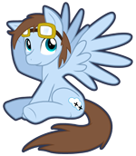

My Little Pony: Markov Chains Are Magic!
A random episode transcript generator using markov chains
Created by:
Cloud Hop

Choose the number of lines to generate:
30
Loading a crapload of markov chain objects...